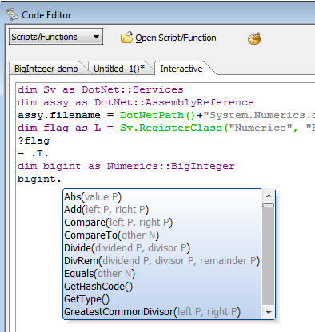

.NET Framework Support
Alpha Anywhere supports calling into .NET Framework assemblies from Xbasic. This opens up a wealth of additional capabilities for Xbasic programs for very little effort.Technically, the .NET Framework support is encapsulated by an object-oriented Xbasic wrapper in the form of a namespace. In practice, that means that once someone has written the few lines of Xbasic code it takes to import a .NET class, calling that class's methods will be no more complicated than calling any other Xbasic function.
Alpha will be supplying wrappers and sample code for many useful .NET system classes and freely available 3rd-party .NET assemblies. We also plan to maintain a library of .NET wrappers and samples submitted by our ISVs, consultants, and users.
What is the .NET Framework?
According to Microsoft, the .NET Framework is an integral Windows component that supports building and running desktop applications and Web services. It provides a managed execution environment, simplified development and deployment, and support for a wide variety of programming languages. Two key components are the common language runtime (CLR), which manages memory, code execution, and other system services, and the .NET Framework class library, which is a collection of reusable types you can use to develop your applications. The .NET Framework also includes technologies such as ADO.NET, ASP.NET, Windows Presentation Foundation (WPF), Windows Communication Foundation (WCF), and Windows Workflow Foundation (WF).What version of the .NET Framework does V11 support?
Alpha Five Version 11 supports .NET Framework 4, the version released with Visual Studio 2010.What are the benefits of calling the .NET Framework?
The .NET Framework represents hundreds of man-years of effort, with fully tested, efficient classes for all sorts of application areas. The more tested code you can reuse, the less code you need to write and maintain.Some areas where the .NET Framework will be useful to Xbasic programmers are:
- Distributed programming Using the .NET Framework, you can consume existing XML Web services written in any language, wrapped as function calls in Xbasic. Alpha supplies function calls that make constructing a wrapper class for a Web service trivial.
In addition, you can use message queues for reliable network communication, and Windows Communications Foundation to easily construct robust distributed systems. - System integration Many Microsoft products have .NET APIs, and now you will be able to use them from Xbasic. In addition, many useful .NET libraries and classes are available, and now you can easily use them as part of your
Alpha Anywhere applications. For example, see the sample that uses the Exifacto class.
Finally, you may have internal systems written in .NET languages, and now, in Alpha Anywhere, you have an extremely efficient way to write Web and desktop user interfaces for those systems. (Xbasic was already able to use DLLs written in native code, whether ordinary DLLs or COM DLLs.) - Speech The .NET Framework includes robust, easy-to-use functions for speech recognition and synthesis. Try this speech synthesis sample in your own copy of Alpha Anywhere.
- Numerics The .NET Framework includes classes for infinite-precision integers, and for complex variables.
- Encryption The .NET Framework has FIPS-compliant encryption classes based on X.509 certificates. Among many other uses, these can be used for signing e-commerce documents for Amazon, banks, and other financial or commercial institutions.
Editing support for imported .NET Classes
Once you have registered a .NET class or assembly, you will get automatic completion of the registered members of the class, especially when you are working in the Interactive window. As with all Xbasic programming, it is very useful to test code in the Interactive window before adding it to a function or script.
The first four lines of the session above (except for the flag return value) could instead be in a class definition file, as described in Writing Xbasic wrapper classes for .NET classes.
If you are editing a function or script in an Alpha Anywhere session that has not yet run the registration code for the .NET class or assembly you want to use, you will not get these auto-completion popups. Once you have run the registration code, for example by running it from the Interactive window, auto-completion will start to work for that .NET class or assembly in all editing windows.
Type mapping
The .NET Framework has many more variable types than Xbasic. If you have a choice, you should use the following mappings for simple types:| Xbasic type | .NET type |
| A (Any) | System.Object |
| B (Blob) | System.Byte[] |
| C (Character) | System.String |
| D (Date) | System.DateTime |
| K (Guid) | System.Guid |
| L (Logical) | System.Boolean |
| N (Numeric) | System.Double |
| P (Pointer) | System.Object |
| T (Time, includes date and time) | System.DateTime |
| Y (Short Time) | System.DateTime |
Xbasic will do its best to convert data to and from .NET types.
In .NET, System.Object is the root type of every other object. In
Alpha Anywhere, string, numbers, dates, blobs and other well-known types are treated differently than classes (type P) and you will need to carefully consider how you dim variables and assign values. When properties, method arguments and return types are defined in .NET classes as System.Object, it is not always clear to
Alpha Anywhere whether the value being passed is an object or a simple type.
Alpha Anywhere assumes that the type System.Object can be any type in Alpha
Anywhere (this option is represented in Alpha Anywhere by variables of type A). This is particularly important when you are calling a function and passing a parameter by reference. A few simple guidelines may help.
- If a function prototype indicates that an argument value takes a type P (a class) then make sure you dim your variable as type P and do not pass any other type.
- If a function prototype indicates that an argument accepts type A (any type), make sure the actual value is of a type that you know the function accepts.
- If a function prototype indicates that an argument is declared as BYREF (meaning the function may assign the value), make sure that your variable is dimmed with the correct type (match the prototype). If the type declared in the function prototype is A, you should dim a new variable as A before making the call.
Preloaded .NET Classes
At startup, Alpha Anywhere loads the most commonly used .NET classes in the System and Microsoft namespaces. See this page for a full list of them. If the class you wish to use is not in this list you can register it yourself..NET Framework Resources
The DotNet Namespace
- DotNet::AssemblyReference
- DotNet::Services
- Preloaded .NET Classes
- Full list of preloaded .NET Classes
- Writing Xbasic wrapper classes for .NET classes
- DotNetPath Function
- DotNet Examples
- DotNet Example: Using System.Text.StringBuilder
- DotNet Example: Using a Private Assembly
- DotNet Example: Speech Synthesis
- DotNet Example: Big Integers
- DotNet Example: Complex Numbers
- DotNet Example: Matrix Manipulation
- DotNet Example: Image metadata function
- DotNet Example: Image metadata class
- DotNet Example: Digital Hash
- DotNet Example: Serial IO
- DotNet Example: Send an email
- DotNet Example: Working with Enumerated Types